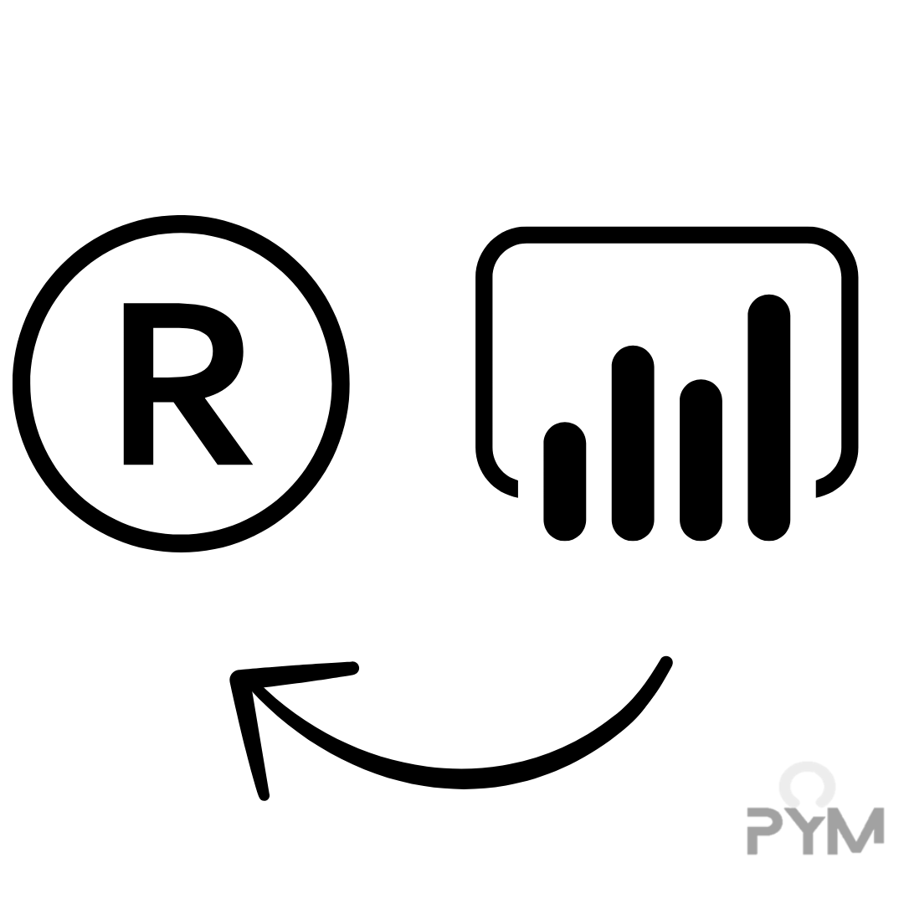

Contenido
Curso Intermedio de Análisis de datos
- Más de Pandas y temas selectos de programación
- Mejorando proyecto anterior (Manejo de fechas)
- Python + SQL: Creando un formulario
- Problemas de programación en Python y SQL
- Más de tableros
En este módulo profundizaremos más en temas asociados con el análisis de datos, enfocándonos en aquellas habilidades que son valoradas actualmente en el mercado laboral. Para conseguir lo anterior trabajaremos con base, de manera directa, en proyectos.
Manejo de datos con Pandas
Grabación Notas de clase Excel de clase Presentación Acordeón
Limpieza de datos, Pandas y Web Scraping
Grabación Notas de clase Acordeón
Mejorando el proyecto del curso anterior: Fechas con Pandas, Map de listas y más de SQL
Mejorando el proyecto del curso anterior: Fechas con Pandas, Map de listas y más de SQL
Grabación Notas de clase Excel para tablero Tablero PBI Acordeón
Mejorando el proyecto del curso anterior: Fechas con Pandas, Map de listas y más de SQL
Grabación Notas de clase Acordeón (html) Acordeón (colab)
Curso de Estadística y ML
- Introducción a la probabilidad y estadística
- Regresiones lineales y logísticas
- Aprendizaje supervisado y no supervisado
- Redes neuronales artificiales
- Series de tiempo
- Introducción al PLN
En este módulo profundizaremos en temas concernientes a la ciencia de datos, enfocándonos en adquirir habilidades que nos permitan desarrollar y entrenar modelos de machine learning. Asimismo, adquiriremos nociones importantes sobre la estadística, particularmente hablando, regresiones y series de tiempo.
Introducción a la probabilidad
Grabación (PDF) Introducción a la probabilidad (PDF) Teorema de Bayes Notas de clase (Pizarrón) Notas de clase
Introducción a la estadística
Grabación (PDF) Introducción a la estadística Notas de clase (Pizarrón) Notas de clase
Regresión lineal: Modelo predictivo y estadístico I
Grabación
(PDF) Introducción a la regresión lineal
Notas de clase (Python)
(Pizarrón) Notas de clase
Tarea
Complementos:
✨ Resumen de notas de Python y R ✨
✨ Notas del curso del 2024 ✨
Regresión lineal: Modelo predictivo y estadístico II (programación)
Grabación
(PDF) Introducción a la regresión lineal
Notas de clase (Python)
Tarea
Regresión logística
Curso introductorio de programación
- Introducción a la programación con Python
- Generación de la información de ventas
- Introducciòn a SQL, Pandas y funciones
- Automatizaciones, funciones y SQL
En este módulo aprenderemos a programar utilizando Python y SQL, asimismo, daremos nuestros
primeros pasos en el análisis de datos utilizando la librería Pandas. El enfoque que le daremos
será aplicado directamente al proyecto del curso, es decir, conforme vayamos aprendiendo
Python, y Pandas, iremos aplicando lo aprendido para la automatización de procesos.
Clase 1: Introducción a la programación con Python
Grabación I
Notas de clase I
Grabación II
Notas de clase II
Acordeón
Quiz

Complementos:
✨ Conceptos básicos de Python ✨
✨ Tarea 1 ✨
✨ Ejercicio 1 ✨ 17-Ene-2025
Clase 2: Generación de la información de ventas
Grabación
Notas de clase
Cheat Sheet Pandas
Acordeón
Complementos:
✨ Bucles y condicionales ✨
✨ Tarea 2 ✨
✨ Ejercicio 2 ✨ 20-Ene-2025
Clase 3: Introducción a SQL, Pandas y funciones
Grabación
Apunte de clase
Acordeón
Complementos:
✨ Quiz ✨ 22-Ene-2025
Clase 4: Automatizaciones, funciones y SQL
Grabación
Notas
Acordeón
Complementos:
✨ Pandas y NumPy ✨
✨ Quiz ✨
24-Ene-2025
Clase 5: Más de SQL, Python y Ejemplo práctico
Grabación
Notas
Acordeón
Complementos:
✨ SQL (Notas curso pasado) ✨
✨ Para practicar ✨
27-Ene-2025
Clase 6: POO, automatización y Power BI (Parte I)
Grabación
Notas
Acordeón
Complementos:
✨Introducción a Power BI✨
29-Ene-2025
Clase 7: POO, automatización y Power BI (Parte II)
Grabación
Notas
Acordeón
Complementos:
✨Introducción a Power BI✨
31-Ene-2025
Clase 8: POO, automatización y Power BI (Parte III)
Grabación
Notas
Tablero
Complementos:
✨Introducción a Power BI✨
01-Feb-2025
Proyectos
Es esta sección estarán los códigos y materiales de los proyectos que abordaremos a lo largo del curso. En esta ocasión, cada link del proyecto nos redirigirá a un repositorio en Github.
PROYECTO 1: Simulación de ventas (implementación del flujo de datos): Link Tablero
PROYECTO 2: Avance
✨ Instrucciones-Notebook✨
✨ Entrega✨
✨ Solución (Se sube el 22-mar)✨
PROYECTO 3: Formulario (interfaz gráfica con Tkinter + flujo con SQL): Link Tablero
PROYECTO 4: Análisis de datos de encuentas (proceso desde cero): Link Tablero
Clases extra

En esta sección encontrarás los materiales referentes a las clases extra de R y de Power BI, así como
los materiales correspondientes a las asesorías.
Clase 1: Introducción a R
Grabación Notas de clase Acordeón Tarea 1
Fecha de clase: 2025-01-18
Clase 2: Más de R
Grabación Notas de clase Acordeón I Acordeón II
Fecha de clase: 2025-01-25
Clase 3: Manejo de datos I
Grabación Notas de clase Acordeón Tarea 2
Fecha de clase: por definir
Clase 4: Manejo de datos II
Grabación Notas de clase Acordeón Tarea 3
Fecha de clase: por definir
Clase 5: Graficación con GGplot
Grabación Notas de clase Acordeón Tarea 4
Fecha de clase: por definir